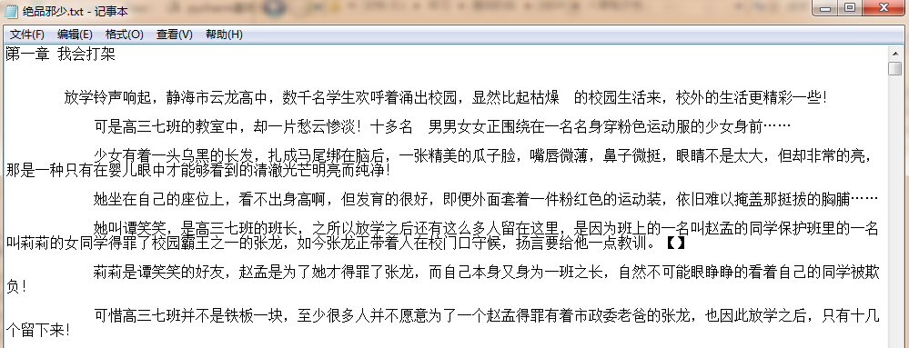

代码
# 需要的库
import requests
from lxml import etree
from multiprocessing import Pool
import os
# 请求头
headers = {
'User-Agent': 'Mozilla/5.0 (Windows NT 6.1; WOW64) AppleWebKit/537.36 (KHTML, like Gecko) Chrome/65.0.3325.181 Safari/537.36'
}
# 创建存储路径
pathname = './八零电子书/'
if not os.path.exists(pathname):
os.mkdir(pathname)
# 获取书籍列表
def get_booklist(url):
try:
response = requests.get(url=url,headers=headers)
etrees = etree.HTML(response.text)
sum = etrees.xpath('//a[@class="last"]/text()')[0]
booklist = etrees.xpath('//div[@class="book_bg"]/a/@href')
pool.map(get_book,booklist)
urls = ['http://www.quanshuwang.com/list/3_{}.html'.format(i) for i in range(2,int(sum)+1)]
pool.map(get_booklist,urls)
except Exception:
print('get_booklist failed')
# 获取具体书籍
def get_book(url):
try:
response = requests.get(url=url, headers=headers)
etrees = etree.HTML(response.text)
mulu = etrees.xpath('//a[@id="read_book"]/@href')[1]
get_mulu(mulu)
except Exception:
print('get_book failed')
# 获取书籍目录
def get_mulu(url):
try:
response = requests.get(url=url, headers=headers)
etrees = etree.HTML(response.text)
zhangjie = etrees.xpath('//div[@id="yulan"]/li/a/@href')
for i in zhangjie:
get_content(i)
except Exception:
print('get_mulu failed')
# 获取书籍内容
def get_content(url):
try:
response = requests.get(url=url, headers=headers)
etrees = etree.HTML(response.text.encode(response.encoding).decode(response.apparent_encoding))
book_name = etrees.xpath('//p[@class="text"]/a/text()')[1]
zhangjie = etrees.xpath('//div[@class="date"]/h1/text()')[0]
contents = etrees.xpath('//div[@id="content"]/text()')
print(zhangjie+'..正在下载')
f = open(pathname+book_name+'.txt','a+',encoding='utf-8')
f.write(zhangjie+'\n\n')
for con in contents:
f.write(con+'\n')
f.close()
except Exception:
print('get_content failed')
# 程序入口
if __name__ == '__main__':
url = 'https://www.80txt.la/sort5/1.html'
# 创建进程池
pool = Pool()
# 启动函数
get_booklist(url)控制台输出
E:\anaconda\python.exe E:/练习/最后阶段/0809/八零电子书.py
1第一章 捡到个小雌性..正在下载
01 遗嘱..正在下载
第一章 捡了东西不一定能换到钱..正在下载
2第二章 摔出了地球..正在下载
02 异变..正在下载
3第三章 这是个高科技世界..正在下载
第二章 爷爷！您是我的亲爷爷..正在下载
03 手镯..正在下载
第三章 不在新手村混的新手..正在下载
4第四章 所谓杌力..正在下载
第一章 我会打架..正在下载
04长生..正在下载打开文件夹查看是否下载成功

done。